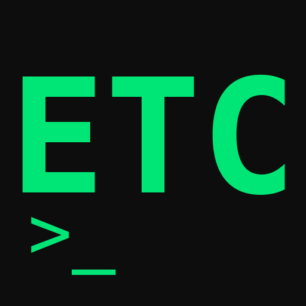
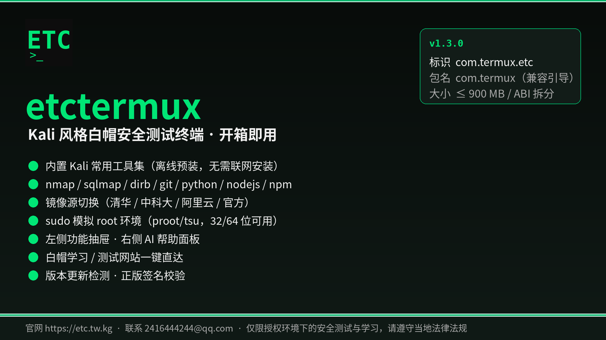
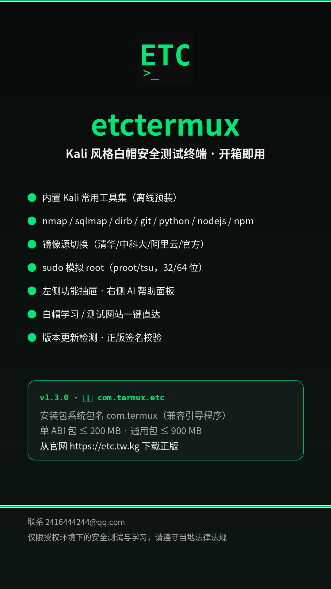

基于 Termux 深度定制的白帽安全测试终端，内置 Kali 常用工具集并离线预装、开箱即用——安装后无需联网、无需再次安装，命令直接可用。

全部版本也发布在 GitHub Releases。安装时请允许"安装未知应用"。包名说明：安装包系统包名保持 com.termux（与官方 Termux / ZeroTermux 一致，保证引导程序兼容）；项目标识为 com.termux.etc。
Kali 常用工具直接烘烤进安装包，首次启动自动解压就绪，无需联网、无需再次安装；仍可用 apt / pip 安装扩展。
Kali 式提示符、绿色 ASCII banner、自定义 bashrc，终端体验贴近 Kali Linux。
镜像源 / 工具菜单 / 更新 / 白帽网站 / sudo / 关于 一键直达；长按音量 + 快速打开。
支持 OpenAI 兼容接口（OpenAI / DeepSeek / 本地 Ollama 等），自定义端点与 Key，长按音量 - 打开。
清华 / 中科大 / 阿里云 / 北外 / 南大 / 官方源一键切换，apt 损坏自动修复（dpkg --configure -a）。
nmap、sqlmap、dirb、netcat、socat、dnsutils、whois、traceroute、openssh、git、python、nodejs、npm、proot、tsu 等。
已 root 用真实 su，未 root 用 proot / fakeroot 模拟；32/64 位与模拟器均支持。
OWASP、HackTheBox、TryHackMe、HackerOne、Vulhub、补天、先知等一键打开。
自动检测最新版并按设备架构下载安装到 termux_kali_etc 目录。
非官方签名版本无法使用，自动提示并跳转官网；签名哈希见下方正版校验。
自动创建 /storage/emulated/0/termux_kali_etc 目录，与系统文件互通。
复制 / 粘贴 / 更多等菜单已汉化，主题为 Kali 绿深色风格。

etctermux 启动时校验自身签名，与官网公布值不一致即为盗版 / 被篡改版本，将无法使用。请核对：
官方签名 SHA-256:
a08602c171dd9e1e6cba264e69c11284b55777922819d9f3750b9dbd8b1485bb
机器校验文件：verify.json（应用内置校验也读取此文件）。
应用基于 Termux（GPLv3 兼容许可）二次开发，保留上游版权声明与许可。项目标识 com.termux.etc。
GitHub：github.com/ETQWFD/etctermux